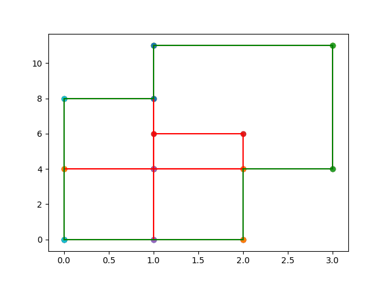

Input 18
5
0 0
1 4
0 4
1 8
3 11
2 6
1 0
2 4
Output 18
Measure = 26
Number of Contour Lines = 8
Contour Line Segments:-
0 0 2 0
2 4 3 4
0 8 1 8
1 11 3 11
0 0 0 8
1 8 1 11
2 0 2 4
3 4 3 11
Contour Length = 28
